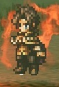

歧路旅人的回合制戰鬥
歧路旅人的遊戲機制是採取回合制戰鬥，但不同於一般的回合制戰鬥，歧路旅人的回合制戰鬥在基礎上，加上了BP機制與弱點機制兩個機制。 透過這兩個機制，歧路旅人的戰鬥體驗就相較於傳統回合制更有策略性，並且善用這二者機制後的優點也十分巨大。 這也鼓勵了絕大多數的玩家在戰鬥時不會再是以傳統回合制的思路戰鬥，而是轉變成能利用二者機制的思路戰鬥。


歧路旅人的遊戲機制是採取回合制戰鬥，但不同於一般的回合制戰鬥，歧路旅人的回合制戰鬥在基礎上，加上了BP機制與弱點機制兩個機制。 透過這兩個機制，歧路旅人的戰鬥體驗就相較於傳統回合制更有策略性，並且善用這二者機制後的優點也十分巨大。 這也鼓勵了絕大多數的玩家在戰鬥時不會再是以傳統回合制的思路戰鬥，而是轉變成能利用二者機制的思路戰鬥。
每個敵人都有不同的弱點，如果能對應敵人的弱點，以相同的傷害種類攻擊，便可以達到較高的傷害。

依照敵人的不同，當以弱點攻擊相對應的次數時，便可以擊破要害， 被擊破要害的敵人在被擊破回合與被擊破的下回合不會行動。

→
在敵人被擊破要害後，敵人會出現暈眩的樣子，這個狀態直到敵人再次行動時， 在這段時間不管以任何傷害種類攻擊敵人，都會獲得傷害加成。

在戰鬥開始時會獲得1顆BP，而隨著時間的過去， 除非使用了BP點數，否則通常情況下每回合回復1BP

→
除了透過等待來獲得BP，還有其他方法可以獲得BP。 像是施放特蕾莎的技能，或是使用回復BP的石榴。

BP在戰鬥中的應用便是強化普通攻擊或角色的技能， 最多可以在一次行動中用3顆BP來強化。 如果強化普通攻擊會增加攻擊的次數， 而強化技能則是增強技能的威力。 此外，使用BP後的回合不回復BP。
→
→
→